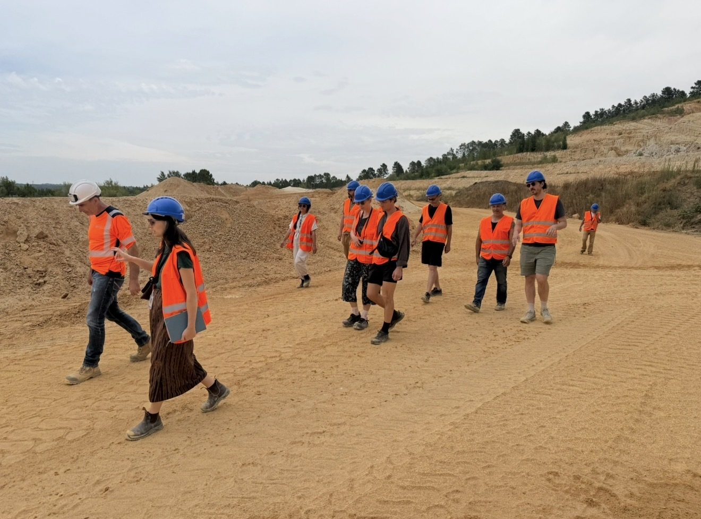
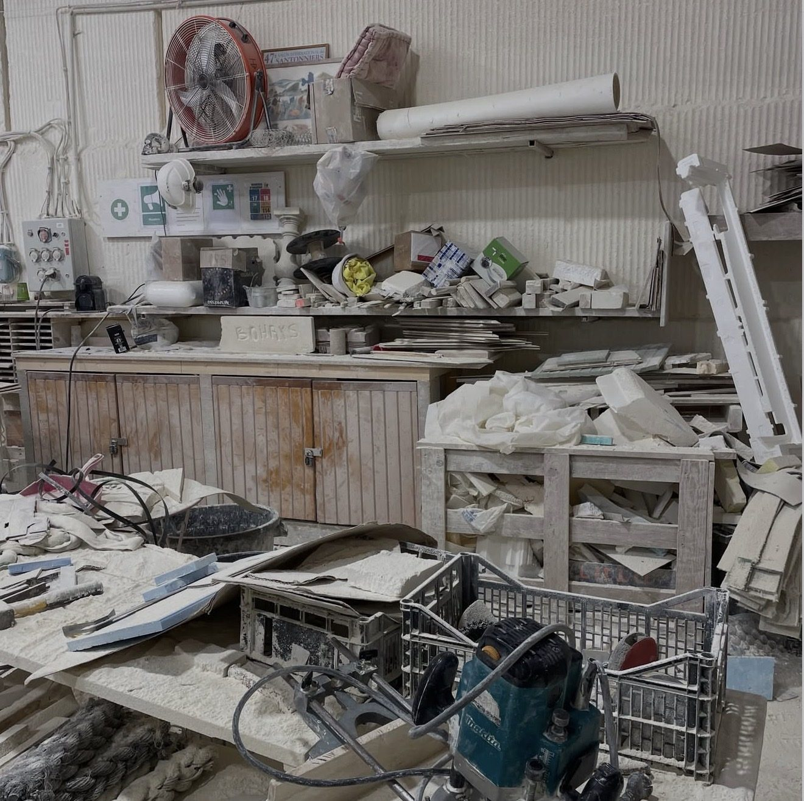

An archive of voices
Research in comparative literature with Professor Isabel Balseiro: building and keeping an archive of some 3,000 documents and 120 hours of recorded interviews.
Materials, archives and images, read closely.


Research in comparative literature with Professor Isabel Balseiro: building and keeping an archive of some 3,000 documents and 120 hours of recorded interviews.